素材は中身で4つに分けています。「見る」で中身を確認できます。使いたいものにチェックを入れて、画面の下の「まとめてダウンロード」を押すと、1つのZIPでiPadに保存されます。1本だけなら「保存する」でもOK。
素材には街の人や子どもが映っています。自分のSNSに上げない・授業の外で使わない。
8秒・縦
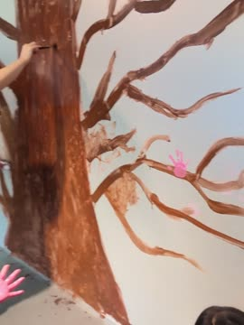
28秒・縦
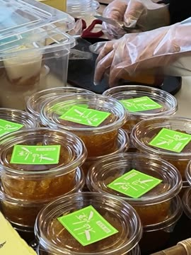
6秒・縦
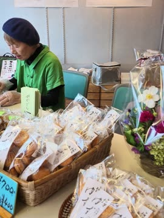
7秒・縦
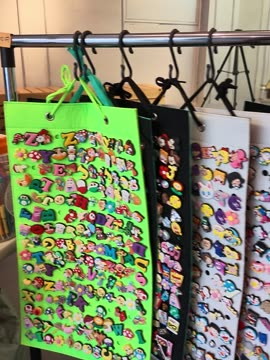
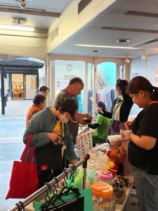
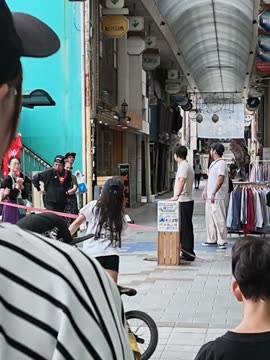
18秒・縦
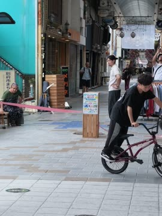
9秒・縦
40秒・縦
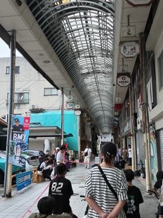
17秒・縦
23秒・縦
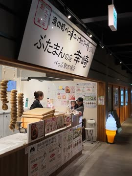
5秒・縦
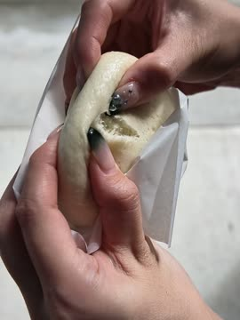
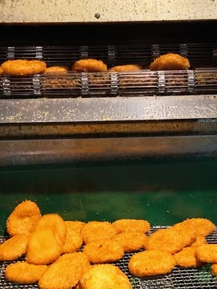
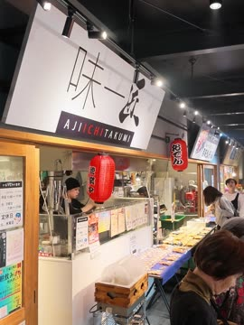
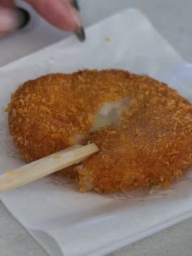
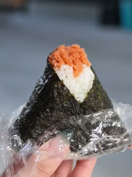
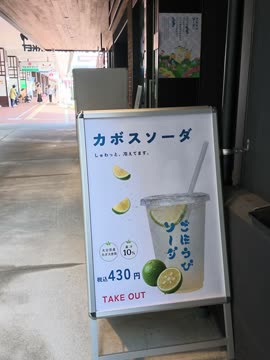
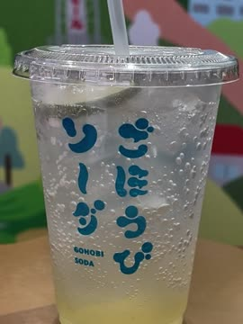
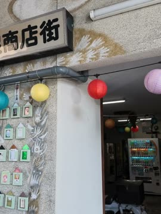
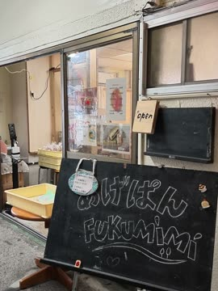
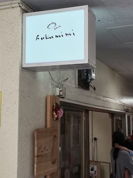
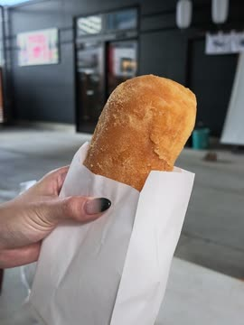
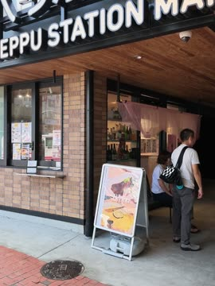
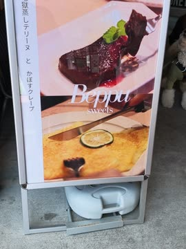
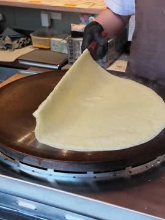
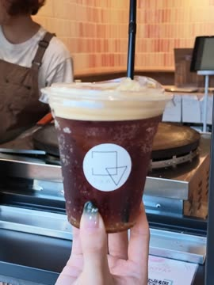
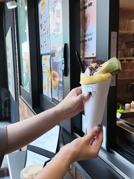
10秒・縦
14秒・縦
4秒・縦
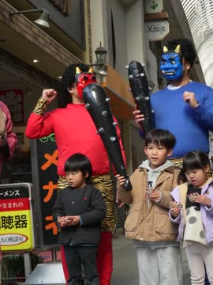
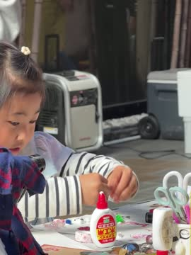
14秒・横
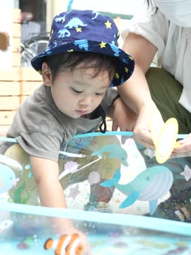
9秒・横
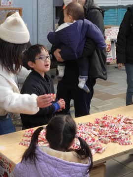
13秒・縦
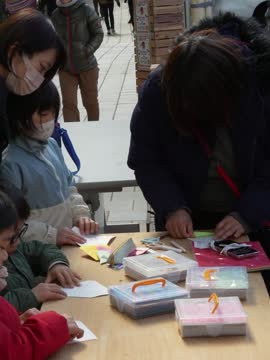
12秒・縦
8秒・横
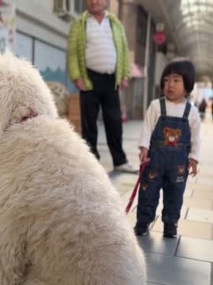
4秒・横
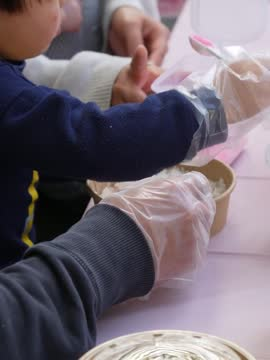
11秒・縦
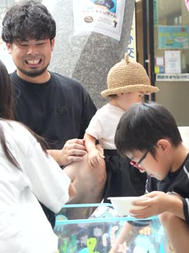
15秒・縦
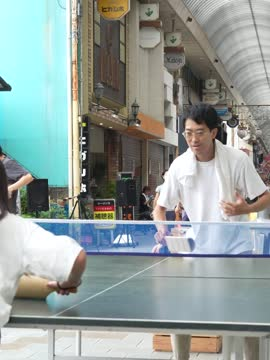
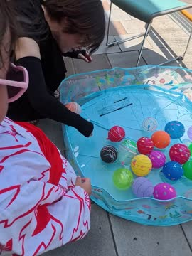
13秒・横
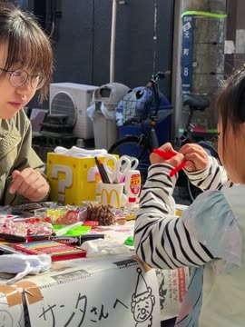
11秒・横
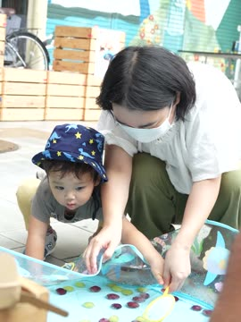
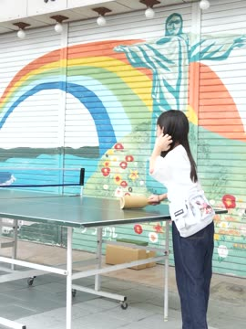
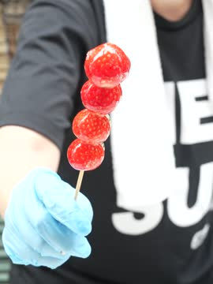
7秒・横
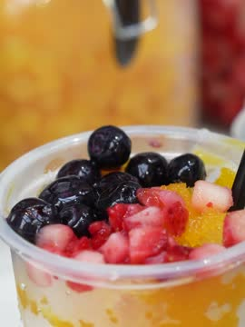
12秒・横
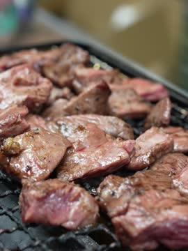
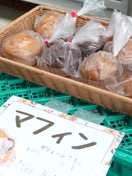
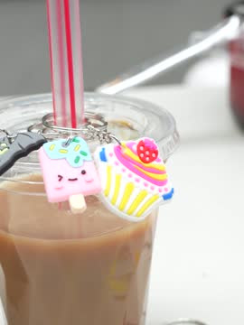
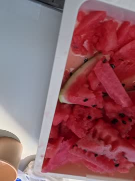
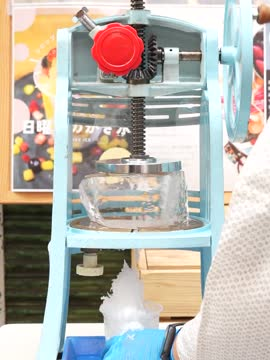
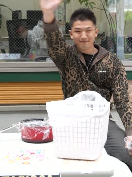
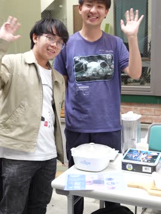
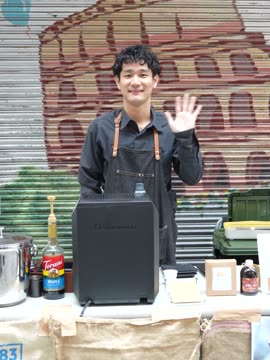
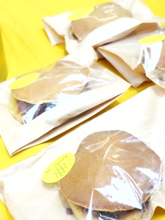
10秒・横
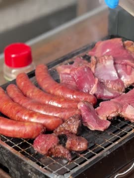
5秒・横
15秒・横